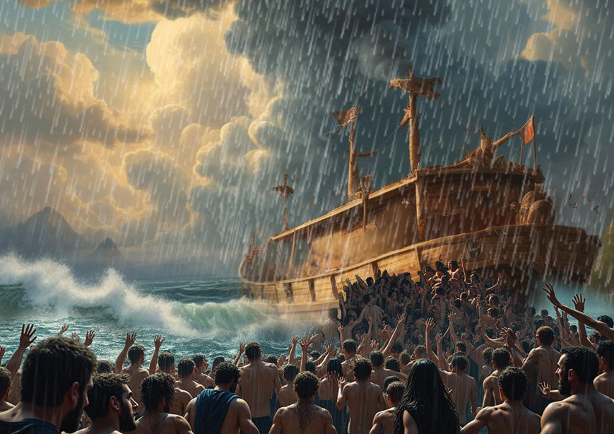

God was saddened seeing all the evil which entered man’s heart, and decided to destroy all living things on earth (Genesis 6:5-8). He selected Noah, who alone was “righteous in his generation,” and instructed him to build an ark and to preserve two of each creature. Figure 3.10 gives a portrayal of Noah's Ark.
Noah built the ark and God made it rain for 40 days and 40 nights.
Figure 3.11 shows people struggling to get into Noah's ark.

After 150 days, the ark came to rest on the mountain of Ararat. Noah opened a window of the ark and sent forth a raven and a dove. After the earth became dry enough, Noah and his family, together with the animals, descended from the ark.
Noah offered a